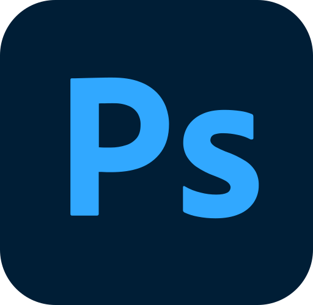

⚡ أدوات أكثر روجاَ

Adobe Photoshop
أحدث إصدار من أدوبي فوتوشوب 2026 كامل مع خاصيّات الذكاء الاصطناعي ويدعم اللغة العربية 64 بت نسخة كاملة أوفلاين رابط واحد مباشر.
الحجم:5.16 GB
نوع النسخة:64Bit

DriverPack Solution
سطوانة تعاريف شاملة لكافة الاجهزة والطرازات والقطع حيث يمكنك بسهولة تحديد الأجهزة التي تحتاج إلى تعريف أو تحديث تعريفاتها القديم لتبدأ بالعملية فوراً نسخة ديفيدي (نسخة مخففة)
نوع النسخة: 32 & 64 bit
الحجم:6,6 MB
HEU KMS Activator 63.4 (أحدث إصدار 2026)
HEU KMS Activator هو أداة تفعيل قوية وسهلة الاستخدام تساعد المستخدمين على تفعيل منتجات Microsoft Windows وOffice
ويندوز XP / Vista / 7 / 8.1 / 10 / 11 Microsoft Office 2010، 2013، 2016، 2019، 2021، 2024 وأوفيس 365 جميع إصدارات Windows Server
Microsoft Activation Script MAS لتفعيل ويندوز وOffice
برنامج Microsoft Activation Script هو أداة خفيفة الوزن ومفتوحة المصدر تعتمد على CMD، مصممة لتفعيل ويندوز وOffice بأمان وكفاءة. دون الاعتماد على منشطات قد تكون ضارة.

تحميل الفيديو 4K + 26.2.0 + محمول
هل ترغب في حفظ مقاطع الفيديو أو الصوت أو الترجمة المفضلة لديك على يوتيوب بجودة عالية؟ 4K Video Downloader+ هنا لمساعدتك! تتيح لك هذه الأداة القوية تحميل المحتوى بسرعة وسهولة، محسنة لسرعة جهاز الكمبيوتر والإنترنت الخاص بك.
المعالج: معالج Intel أو AMD بسرعة 1GHz أو أسرع
الذاكرة: 2 جيجابايت على الأقل
مساحة القرص: 100 ميجابايت للتثبيت
الإنترنت: اتصال إنترنت مستقر لتحليل عناوين URL وتحميل الوسائط عالية السرعة.

WinRAR 7.23
WinRAR هو أداة قوية لاستخراج الأرشيف، ويمكنه فتح جميع صيغ الملفات الشائعة.
تشفير AES الآمن بتردد 256 بت
ميزات النسخ الاحتياطي المتكاملة
🛠️ تعريفات قطع الكمبيوتر

Snappy Driver Installer
أسطوانه التعريفات الشامله المجانيه أضخم الأسطوانات التي تساعدك على تعريف أي جهاز كمبيوتر
نوع النسخة: 32 & 64 bit
الإصدار: Origin v1.15.6.817 & DriverPack v25.08.3
DriverPack Solution
سطوانة تعاريف شاملة لكافة الاجهزة والطرازات والقطع حيث يمكنك بسهولة تحديد الأجهزة التي تحتاج إلى تعريف أو تحديث تعريفاتها القديم لتبدأ بالعملية فوراً نسخة ديفيدي (نسخة مخففة)
نوع النسخة: 32 & 64 bit
الحجم:6,6 MB
DriverPack Solution
اسطوانة التعاريف الشاملة لكافة الأجهزة والطّرازات والقطع حيث تمكنك بسهولة من تحديد الأجهزة التي تحتاج إلى تعريف أو تحديث تعريفاتها القديمة لتبدأ بالعملية فوراً.
نوع النسخة: 32 & 64 bit
الحجم:47.0 GB